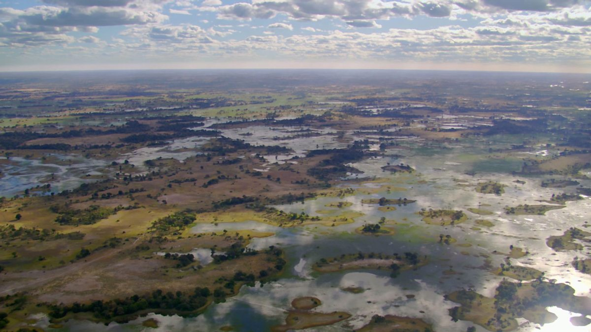

June, 2017
A History of Elephants (Preface)
Press secretary at Animat Habitat™
This is a history of elephants — not simply a list of reasons why we must conserve elephants in the wild. A list of reasons to conserve elephants in the wild alone withholds a resolution. We the people must resolve to conserve elephants and the wild places where they inhabit. Here is the preface to a – tell your friends about a – history of elephants.
Preface
Elephants are kind of a big deal.
The African bush (or savannah) elephant in particular is the largest living land animal on Earth.[1]
An average bull African savannah elephant weighs six-to-seven tons, measures six meters in length, and measures more than three meters in height at the shoulders.[2]
Elephants are herbivores – big herbivores – and they continue to grow for the entire duration of their life. They consume one-to-six hundred pounds of vegetation and sixteen-to-forty gallons of water per day. They spend fourteen-to-sixteen hours each day looking for food and water. In addition to grasses, leaves, twigs, small plants, bushes, bamboo, bark and roots and so on, elephants are known to like fruits and eat crops like banana, sugarcane and sweet marula fruit – a favorite of the savannah elephant. Part of the reason why elephants eat so much and for so long is because they are able to digest very little of the food they can find, so, they must consume more in order to ensure they are properly nourished.[1]
Seed dispersal is a big reason why elephants are an important part of their ecosystem in any wild place they inhabit. These big herbavors migrate in search of food and water, and where they go seeds are dispersed in elephant dung – packed with undigested nutrients – at a distance of up to forty miles.[3]
Elephants need space – a big space. African savannah elephants undertake the longest second longest (second to the Zebra) seasonal migration on land on Earth.[4]
At the peak of the dry season in Africa, herds of savannah elephants embark on a journey across the desert to find water — across the Kalahari to the Okavango. Elephants can only go without water for three days at a time. However, elephants can dig with their feet, trunks and tusks to reach for water up to three feet deep in seemingly dry streambeds.[5]
“Elephants have a special techinque to get at fresh water in the dry season. No other animal has such power. Using their tusks, they pile drive into the flood plain until they reach water below the surface. In doing so, Elephants create a lifeline for other. A hyena and jackel wait their turn.” — Domhnall Gleeson. (2016) Earth's Greatest Spectacles, e/3: Okavango. BBC Natural History Unit.
In this way, elephants create waterholes – upon which many other animals rely – to survive the dry season.[1]
1 Shoshani, J. (2005) “Order Proboscidea.“ In Wilson, D. E.; Reeder, D. M (eds.). Mammal Species of the World: A Taxonomic and Geographic Reference, Vol. 1 (3rd ed.). Johns Hopkins University Press. ISBN 9780801882210.
2 Larramendi, A. (2016) “Shoulder height, body mass and shape of proboscideans.” Acta Palaeontologica Polonica.
3 Campos-Arceiz, A.; Blake, S. (2011) “Mega-gardeners of the forest – the role of elephants in seed dispersal.” Acta Oecologica. Vol. 37, Issue 6.
4 Sukumar, R. (2003). “The Living Elephants: Evolutionary Ecology, Behaviour, and Conservation.” Oxford University Press, USA. ISBN 9780195107784.
5 Kingdon, J. (2013) “Mammals of Africa.” Bloomsbury. ISBN 9781408189962.
A Zombie History of Elephants
Elephants become so big, however they are known to not be prone to cancer. (Cancer is a disease of cell growth.) Being so big, elephants have to grow a lot of cells in particular in comparasion to its most closely related – and much smaller – species: hyraxes and manatees.[6]
Well, manatees are big but not elephantine.
This apparent conflict in principle knowledge of growth and cancererous growth has led to an area of scientific research into elephants for an answer to cancer.
Results published in August of 2018 indicate that elephants have extra copies of a key tumour-supressor gene, named: TP53 or LIF(6). This acts as a “zombie” gene, which surveils cells for oxidated stresses – or damaged DNA – and therein programs a timer to self-destruct, with a chance for the cell to self-repair – or else. The nickname: “zombie”, is given because, ancestrally, these extra copies of LIF(6) genes are turned off, whereas elephants have uniquely evolved to allow this dead gene to come back to life and cause the death of other (cancerous) cells. This has been an effective solution for suppressing cancer in elephants.[7]
This phenomena is known to occur in whales as well, in part explaining their ability to grow so big.
The impact of these results on human cancer research is thanks – in a big way – to elephants.
6 Kellogg, M.; Burkett, S.; Dennis, T. R.; Stone, G.; Gray, B. A.; McGuire, P. M.; Zori, R. T.; Stanyon, R. (2007) “Chromosome painting in the manatee supports Afrotheria and Paenungulata.” Evolutionary Biology. Vol. 7. PMC 1784077. PMID 17244368.
7 Vazquez, J. M.; Sulak, M.; Chigurupati, S.; Lynch, V. J. (2018) “A Zombie LIF Gene in Elephants Is Upregulated by TP53 to Induce Apoptosis in Response to DNA Damage.” Cell Reports. Vol. 24, Issue 7.
A Human History of Elephants
We have glorified elephants in our culture, yet we have massacred elephants in nature. An anecdote — a history of the circus as a travelling travesty for its prized animals: the circus animals, made to perform acts that were not natural — not in their wild nature. Circus elephants were a special attraction in the 19th century, then a special tradition carried on throughout the 20th century and bullhooked into the 21st. Jumbo was the name given to the African bush elephant who went on to be the main attraction in America in the 1880s — when P.T. Barnum dreamed up the “Greatest Show On Earth,” Jumbo was the star.
“We admire elephants in part because they demonstrate what we consider the finest human traits: empathy, self-awareness, and social intelligense. But the way we treat them puts on display the very worst of human behavior.” — Graydon Carter. (2011) In Plain Sight. Vanity Fair. Editor's letter.
Jumbo was not born into superstardom. He was born in Sudan and his mother was killed when he was an infant. He was captured, then exported to a zoo in France, then transfered to London Zoo in England. He was four. He was beaten by the keepers at the zoo at night. This was common practice for elephant keepers. Sixteen or so many years later, the seven-ton adult elephant was ruled to be too big for the zoo, and he was sold to the Barnum & Bailey Circus. Jumbo was bound by chains, confined in a crate, and shipped from England to America. In the circus, he was beaten into submission with sledgehammers, spears and pointed hooks and so on. Jumbo lasted three years in America before his tragic life led to sudden death on the crisscrossed railway tracks of the travelling circus.[8]
Jumbo was the selling point for tickets on the circus posters and so on. His name and image were marketed on everything from large bags of circus popcorn to family-size household products. Jumbo, the elephant, became an eponym: “jumbo” is used as a description of a large size; the word became synonymous with “big” because of Jumbo. [9]
Jumbo's skeleton was later donated to the American Museum of Natural History in New York City.[10]
The circus is closed at last. The last circus elephants in America are off to a sanctuary in Florida and entered in a program to help research a cure for cancer (for humans).[11]
“After 146 years, Ringling Brothers has shut down. Sad news for circus fans, but great news for employers looking to snap up guys who know how to beat elephants with steel rods.” — Norm MacDonald
8 Chambers, P. (2008) “Jumbo: The Greatest Elephant in the World.” (1st US ed.). Hanover, N.H.: Steerforth Press. p. PT14. ISBN 1586421530
9 “Jumbo” (adj.). Online Etymology Dictionary.
10 Collins, G. (1993) “Barnum's Jumbo Is Back In Museum's Center Ring.” New York Times.
11 Ager, S. (2015) “As Ringling Ends Circus, See Where Its Elephants Retired.” National Geographic.

Earth's Greatest Spectacles (e/3: “Okavango”, 2016)
The elephant – as a species – dates back to the Pilocene epoch, which means that the elephant has existed for more than ten times longer than the human temporal range. We have shared this world with elephants for as long as humans have existed. The wild elephant has a place in this world. Wild elephants must have space. We the people must preserve and protect the wild places and the animals that live in them.
For a more complete history of humans and elephants, see: A History of Elephant Conservation, published at Animat Habitat ™ for everyone who may learn and, once learned, who may be inspired to care for nature. It is the only thing that will cause people to care: knowing — and with knowing, and the caring that comes, there is cause for hope that people will find an enduring place for the natural world — the natural systems that keep all of us alive.